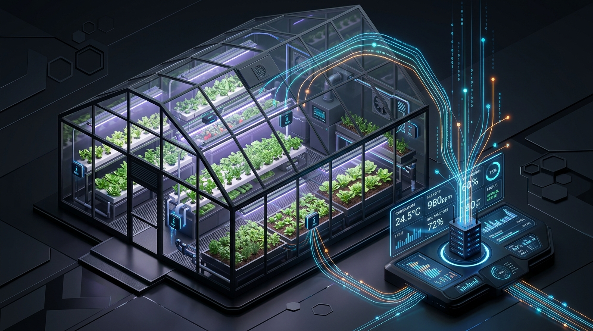
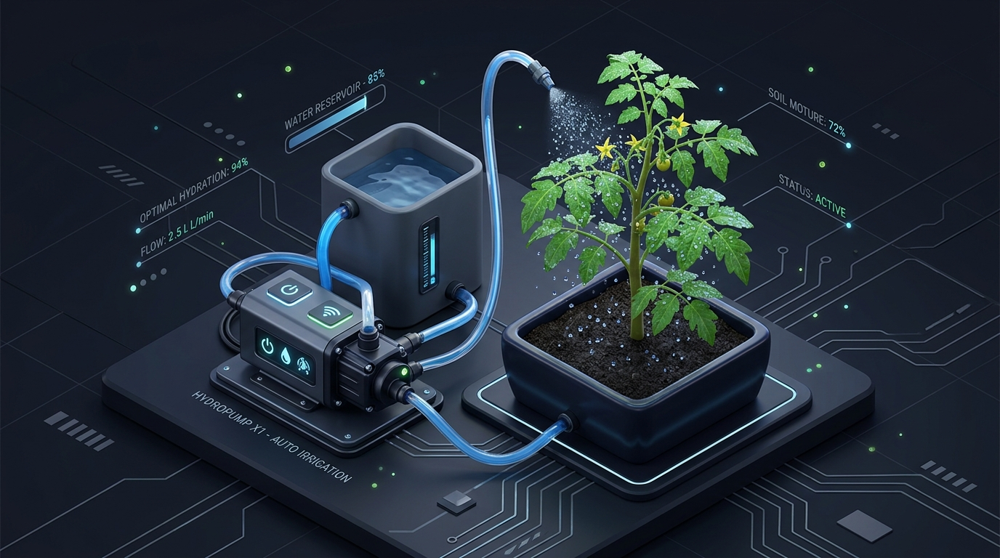

System Features
Designed for reliability, efficiency, and full automation without cloud dependencies.
Automated Irrigation
Precise soil moisture tracking automatically controls water pumps to maintain perfect saturation, preventing both under-watering and over-watering. Your plants get exactly what they need, exactly when they need it.
Live Telemetry
High-resolution monitoring of temperature, humidity, and ambient light levels. All metrics are streamed in real-time to your dashboard with zero latency.
Local First Edge AI
Operates entirely on your local network. No cloud subscriptions, no data harvesting, and completely independent of internet connectivity.
Industrial-Grade Hardware
Built with robust components to ensure 24/7 reliability in demanding environments.
ESP32 Microcontroller
The main processing unit providing dual-core performance and embedded Wi-Fi hosting capabilities for the entire system ecosystem.
Climate Matrix
Integrated DHT11 and LDR sensors provide highly accurate ambient temperature, relative humidity, and light intensity readings.
Analog Probes
Analog resistive sensors provide raw voltage feedback that is mapped to precise saturation and volume percentages in real-time.
Intelligent Execution Loop
The core logic engine running continuously on the edge.

Polling Phase
The ESP32 microcontroller continuously reads raw analog and digital data every 2000ms. It aggregates this data over short intervals to smooth out anomalies.
Analysis Phase
The system compares real-time environmental readings against predefined optimal growth thresholds configured locally on the device.

Execution Phase
Solid-state relays trigger irrigation if the soil is detected to be dry and the reservoir water reserves are confirmed to be sufficient.